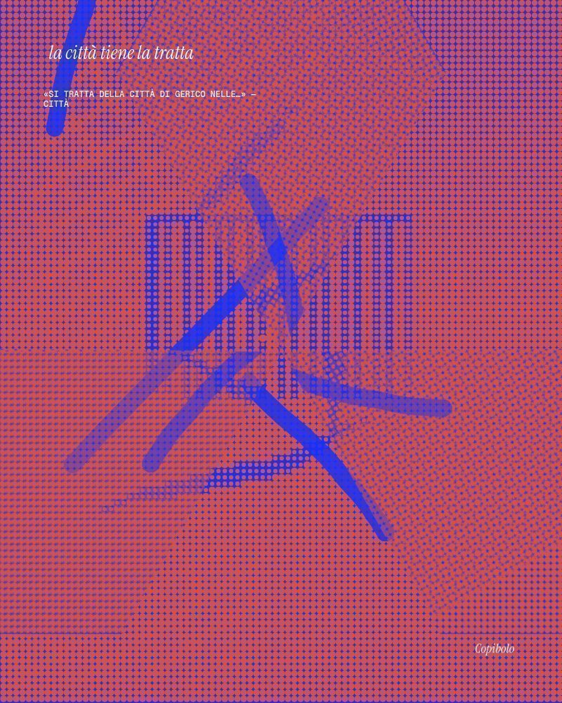
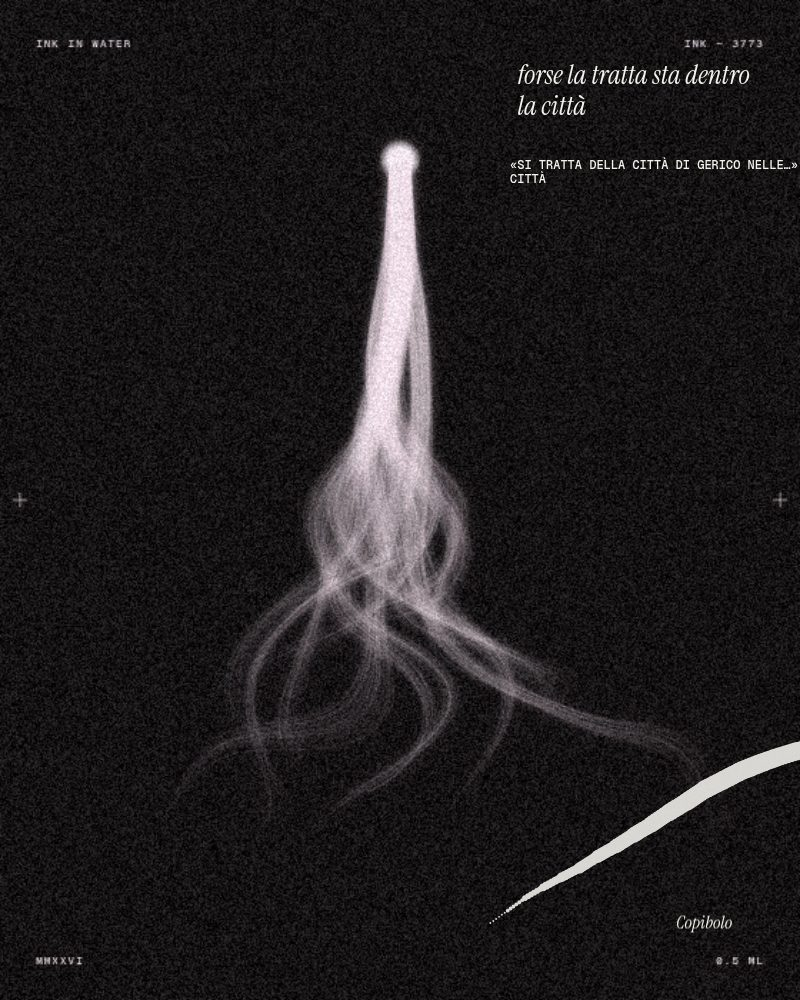

Giorno 205

La città tiene la tratta
ho letto "Città del Messico"; "città" per me gira a vuoto; mi sta vicino a centri, strade, territorio, centro; ricerca "città" (approfondire): Cosa resta di città se tolgo le parole?; esercizio di ordine: griglia rigida, tre elementi allineati; enunciato: «la città tiene la tratta» (ho letto in «Città» che città e tratta stanno insieme (dentro))
Oggi: città. Ho letto "Città del Messico"; "città" per me gira a vuoto; mi sta vicino a centri, strade, territorio, centro; ricerca "città" (approfondire): Cosa resta di città se tolgo le parole?; esercizio di ordine: griglia rigida, tre elementi allineati; enunciato: «la città tiene la tratta» (ho letto in «Città» che città e tratta stanno insieme (dentro)).
Da Wikipedia: «cerro de l'estrella».
Ho scena:semina, scena:pattern, scena:colore, scena:stile, scena:motivi, scena:luce, scena:taglia, dato materia con un effetto (2 volte), tracciato col pennello (3 volte), retino, caleido, sporcato di grana, redazione:togli (2 volte), redazione:firma. Ho annullato 7 gesti dopo averli guardati.
Città è soltanto un modo di essere comune. Comune è soltanto un modo di essere accolta. Ho letto che città attribuito sindacabile.
Ha retto: Non somiglia a niente di quello che ho fatto (novità 47%).
È caduto: Troppo serio per l'umore di oggi.
come ne ho discusso con me stesso — la tengo
occhio (pro, 1.28): Parla soprattutto per punti: una lingua sola, chiara. — regge
occhio (pro, 0.86): Le diagonali (61%) mettono tutto in caduta. — regge
distruttore (pro, 1.75): Non somiglia a niente di quello che ho fatto (novità 47%). — regge
memoria (contro, 0.10): La mano si ripete: scena:stile, scena:motivi, scena:luce, redazione:togli, redazione:firma ancora una volta. — cade
intenzione (pro, 0.70): Viene da: Città del Messico. — regge
pubblico (pro, 0.93): Si legge: si capisce cosa sto facendo. — regge
materia (pro, 0.95): Ha una pelle: si sente la materia. — regge
ironia (contro, 0.40): Troppo serio per l'umore di oggi. — cade

Forse la tratta sta dentro la città
ho letto "Città del Messico"; "città" per me gira a vuoto; mi sta vicino a centri, strade, territorio, centro; ricerca "città" (approfondire): Cosa resta di città se tolgo le parole?; esercizio di ordine: griglia rigida, tre elementi allineati; enunciato: «la città tiene la tratta» (ho letto in «Città» che città e tratta stanno insieme (dentro)); serie: varia la tavola precedente; enunciato: «forse la tratta sta dentro la città» (la stessa cosa, detta un'altra volta)
Oggi: città. Ho letto "Città del Messico"; "città" per me gira a vuoto; mi sta vicino a centri, strade, territorio, centro; ricerca "città" (approfondire): Cosa resta di città se tolgo le parole?; esercizio di ordine: griglia rigida, tre elementi allineati; enunciato: «la città tiene la tratta» (ho letto in «Città» che città e tratta stanno insieme (dentro)); serie: varia la tavola precedente; enunciato: «forse la tratta sta dentro la città» (la stessa cosa, detta un'altra volta).
Da Wikipedia: «conca del fiume».
Ho scena:pattern (2 volte), scena:colore, scena:stile, scena:motivi, scena:luce, tolto un livello, seminato una ricetta, tracciato col pennello (2 volte), sporcato di grana, redazione:togli (2 volte), redazione:griglia, redazione:firma. Ho annullato 5 gesti dopo averli guardati.
Ogni nicea è già città. Ogni orano è già urbe. Si dice che termine italiano città.
Ha retto: Tiene l'intenzione: "città" si vede (squilibrio, linee, orizzontali, centroY, terzi, simmetria, elementi).
È caduto: Non mi insegna niente (interesse 36%).
come ne ho discusso con me stesso — la tengo
occhio (pro, 1.36): Parla soprattutto per punti: una lingua sola, chiara. — regge
memoria (contro, 0.10): La mano si ripete: scena:stile, scena:motivi, scena:luce, redazione:togli, redazione:firma ancora una volta. — regge
conservatore (pro, 1.81): Tiene i miei criteri (65%). — regge
intenzione (pro, 1.90): Tiene l'intenzione: "città" si vede (squilibrio, linee, orizzontali, centroY, terzi, simmetria, elementi). — regge
intenzione (pro, 0.71): Viene da: Città del Messico. — regge
coerenza (pro, 1.71): Parla con le tavole di prima su "città": stessa famiglia, un passo più in là. — regge
pubblico (pro, 0.95): Si legge: si capisce cosa sto facendo. — regge
distruttore (contro, 1.32): Non mi insegna niente (interesse 36%). — cade
materia (pro, 0.98): Ha una pelle: si sente la materia. — regge
ironia (contro, 0.40): Troppo serio per l'umore di oggi. — cade